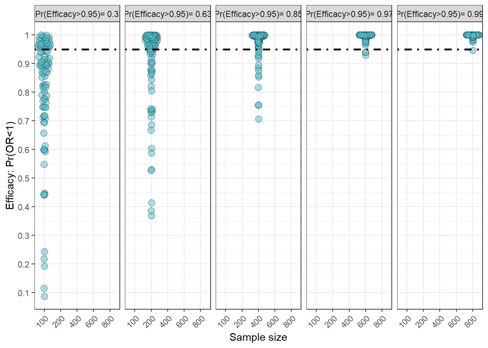
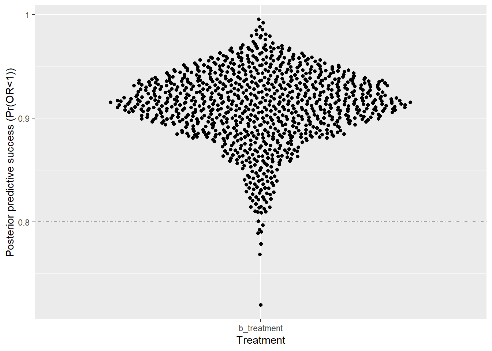
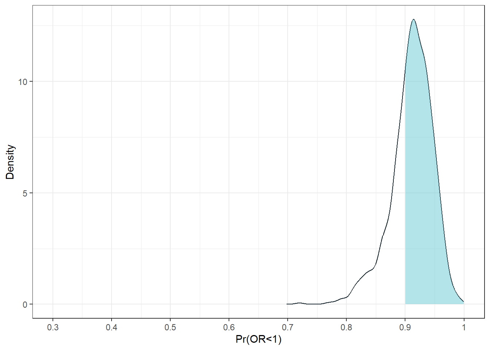

library(magrittr)
library(tidyverse)
library(brms)
library(purrr)
library(marginaleffects)
library(patchwork)
library(cowplot)
library(gt)
library(gtsummary)
library(ggbeeswarm)
oh_cols<- c('#50BECB', '#46A6B2', '#65C9D5', '#97D3DC', '#CDEBF0', '#EDE668', '#AA1E2D', '#E4E5E3', '#F26828', '#DC5C1D', '#F89C70', '#FDCEB0', '#2A3C47', '#18272F', '#404C58', '#646A74', '#C3C3C8', '#74308C')
brms_summary <- function(x) {
posterior::summarise_draws(x, "mean", "sd", ~quantile(.x, probs = c(.025,0.8,0.95)))
}
options(mc.cores = parallel::detectCores())8 Bayesian clinical trial simulations
9 Load library
10 Intro
This script showcases how to conduct power analyses for Bayesian clinical trial designs. I’ll explore equivalence, non-inferiority, superiority/efficacy designs.
11 Establishing Bayesian priors, mcid, and similarity interval
As an example, I’d like to show the prior distribution first.
- the MCID is log(0.8) or -0.4054651
- the similarity interval is [-0.4054651 - 0.4054651]
#priors
#lets see range of OR in log scale
ordat<-round(tibble(or=c(0.1,.2,0.5,0.667,1,1.5,2,4,5,10),logor=log(or)),3) # +/- 1.61
prior.plot<-ggplot(data = tibble(x = -2.3:2.3), aes(x)) +annotate(xmin=log(1/1.5),xmax=log(1.5),ymin=0,ymax=0.5,'rect',alpha=.5)+
stat_function(fun = dnorm, n = 101, args = list(0,log(5)/qnorm(0.975)),aes(colour="Skeptical"),linewidth=2) +theme_bw()+xlab("Log-odds ratio")+ylab("Density")+scale_x_continuous(limits=c(-2.3,2.3),labels =ordat$logor,breaks=ordat$logor,sec.axis = dup_axis(name="Odds ratio",labels=ordat$or))+
scale_colour_manual(breaks=c("Skeptical"),values=c("#97D3DC"),name="Prior")+theme(legend.position="top")+annotate("text",x=0,y=.02,label="Similarity interval")
prior.plot
12 Power analysis
Bayesian power = probability of reaching trial goals
12.1 fitting initial model
This part of the script will be useful for the real analysis, which includes fitting the logistic model, checking the model, and testing hypotheses.
n=100 # sample size of patients total
#simulating the dataset
d<-tibble(treatment=rbinom(n,1,.5))|>
mutate(y=ifelse(treatment ==0,rbinom(n,1,.19),
rbinom(n,1,.19)))
d|>
group_by(treatment)|>
count(y)# A tibble: 4 × 3
# Groups: treatment [2]
treatment y n
<int> <int> <int>
1 0 0 47
2 0 1 6
3 1 0 39
4 1 1 8#fit a brms model with skeptical prior
#fit <-brm(data = d,
# family = bernoulli(),
# y~treatment,
# prior = c(prior(normal(0,log(5)/1.96), class = #b)),chains=4,cores=4)
#saveRDS(fit,file="Power_analysis_simulations_outputs/Initial_fit_Bayesian_model.rds")
fit<-readRDS("Power_analysis_simulations_outputs/Initial_fit_Bayesian_model.rds")
plot(fit) # see chains
print(fit) # check rhat, effective sample size, and model output Family: bernoulli
Links: mu = logit
Formula: y ~ treatment
Data: d (Number of observations: 100)
Draws: 4 chains, each with iter = 2000; warmup = 1000; thin = 1;
total post-warmup draws = 4000
Regression Coefficients:
Estimate Est.Error l-95% CI u-95% CI Rhat Bulk_ESS Tail_ESS
Intercept -1.54 0.37 -2.29 -0.85 1.00 2918 2591
treatment 0.15 0.45 -0.73 1.02 1.00 3221 2752
Draws were sampled using sampling(NUTS). For each parameter, Bulk_ESS
and Tail_ESS are effective sample size measures, and Rhat is the potential
scale reduction factor on split chains (at convergence, Rhat = 1).prior_summary(fit) prior class coef group resp dpar nlpar lb ub tag
normal(0, log(5)/1.96) b
normal(0, log(5)/1.96) b treatment
student_t(3, 0, 2.5) Intercept
source
user
(vectorized)
default###posterior predictive checks
pp_check(fit,type="stat",stat="mean")Using all posterior draws for ppc type 'stat' by default.Note: in most cases the default test statistic 'mean' is too weak to detect anything of interest.`stat_bin()` using `bins = 30`. Pick better value with `binwidth`.
pp_check(fit,stat="mean",ndraws=50)Warning: The following arguments were unrecognized and ignored: stat
#get priors, if interested
#get_prior(fit)
#marginal effects12.1.1 Hypothesis testing of posterior distribution
#test hypotheses
# test treatment <0, overall benefit
ob<-hypothesis(fit,"treatment<0",alpha=0.1)
obHypothesis Tests for class b:
Hypothesis Estimate Est.Error CI.Lower CI.Upper Evid.Ratio Post.Prob
1 (treatment) < 0 0.15 0.45 -0.41 0.74 0.57 0.36
Star
1
---
'CI': 80%-CI for one-sided and 90%-CI for two-sided hypotheses.
'*': For one-sided hypotheses, the posterior probability exceeds 90%;
for two-sided hypotheses, the value tested against lies outside the 90%-CI.
Posterior probabilities of point hypotheses assume equal prior probabilities.###test for similarity ; within log(0.8)-log(1.2)
si1<-hypothesis(fit,"treatment < log(1.5)",alpha=0.05)
si2<-hypothesis(fit,"treatment <log(0.667)",alpha=0.05)
si1$hypothesis$Post.Prob-si2$hypothesis$Post.Prob[1] 0.617# dobule check my understanding by manually calculating probs
samples<-as.data.frame(fit)
n<-length(samples$b_treatment)
#manual for overall benefit
sum(samples$b_treatment<0)/n[1] 0.3625#similarity interval
sum(samples$b_treatment>log(0.667) & samples$b_treatment<log(1.5))/n[1] 0.617#### hypothesis function and manual calculations are in agreement #####
##plotting out the treatment effect
subs<-tibble(treatment=samples$b_treatment)|>
mutate(Prior="Skeptical")
mean.paste<-paste(round(exp(mean(subs$treatment)),3)," odds ratio\n",round(mean(subs$treatment),3)," log odds ratio",sep="")
mp<-round(mean(subs$treatment),3)
ggplot(subs,aes(x=treatment,..scaled..))+geom_density(fill='#46A6B2',alpha=.5)+theme_bw()+xlab("Treatment effect (log odds ratio)")+
scale_x_continuous(limits=c(-1.61,1.61),labels =c(-2.302,ordat$logor),breaks=c(-2.302585,ordat$logor),sec.axis = dup_axis(name="Treatment effect (odds ratio)",labels=c(0.1,ordat$or)))+
scale_y_continuous(expand=c(0,0),limits=c(0,1.3))+
annotate(xmin=log(1/1.5),xmax=log(1.5),ymin=0,ymax=1.3,'rect',alpha=.5)+
annotate("text",x=-1,y=1.15,label = mean.paste)+
annotate("text",x=log(1/1.5),y=1.2,label="Similarity interval",hjust=-.05)+ylab("Density")+
geom_vline(xintercept = 0,linewidth=1,lty="dotdash")Warning: The dot-dot notation (`..scaled..`) was deprecated in ggplot2 3.4.0.
ℹ Please use `after_stat(scaled)` instead.Warning: Removed 1 row containing non-finite outside the scale range
(`stat_density()`).
12.2 Simulation for power analysis: Similarity and Non-inferiority
The simulation takes a long time, so I ran and saved them.
####fit simulate and fit
#n=50
seed<-1
simfit <- function(seed, n) {
set.seed(seed)
d<-tibble(treatment=rbinom(n,1,.5))|>
mutate(y=ifelse(treatment ==0,rbinom(n,1,.19),
rbinom(n,1,.19)))
outp<-update(fit,
newdata = d,
seed = seed,cores=4,recompile=FALSE,sample_prior="no",refresh=0)
ot<-outp|>
brms_summary()|>
data.frame()|>
filter(variable=="b_treatment")
si1<-hypothesis(outp,"treatment < log(1.5)",alpha=0.05)
si2<-hypothesis(outp,"treatment <log(0.6666)",alpha=0.05)
ot$similarity<-si1$hypothesis$Post.Prob-si2$hypothesis$Post.Prob
ot$similarity_below15<-si1$hypothesis$Post.Prob
#benefit<-hypothesis(outp,"treatment <log(1)",alpha=0.05)
#ot$benefit<-benefit$hypothesis$Post.Prob
#ot$harm<- (1-ot$benefit)
return(ot)
}
#######################################################
n_sim<-100 # number of simulations
#simulation here, didn't run
#sim2 <-tibble(expand.grid(seed=1:n_sim,ss=c(100,200,400,600,800)))|>
# group_by(seed,ss)|>
# do(out=simfit(seed=.$seed,n=.$ss))|>
# unnest(out)
#mutate(out = pmap(list(seed, ss), ~ simfit(seed = ..1, n = ..2))) %>%
#saveRDS(sim2,file="Power_analysis_simulations_outputs/Non-inferiority_andsimilarity_Bayesian_simulation_100trials_ss50-1000_log5over1.96prior_1.5OR.rds")
sim2<-readRDS(file="Power_analysis_simulations_outputs/Non-inferiority_andsimilarity_Bayesian_simulation_100trials_ss50-1000_log5over1.96prior_1.5OR.rds")
#calculating bayesian power for noninferiority and similarity
sim2<-sim2|>
group_by(ss)|>
mutate(prbelow15=sum(if_else(similarity_below15>0.95,1,0))/length(similarity_below15),facet=paste("Pr(Non-inferiority>0.95)=",prbelow15,sep=""),
simprob=sum(if_else(similarity>.95,1,0)/length(similarity)),
facetsim=paste("Pr(Similarity>0.95)=",simprob,sep=""))|>
droplevels()
head(sim2)# A tibble: 6 × 14
# Groups: ss [5]
seed ss variable mean sd X2.5. X80. X95. similarity
<int> <dbl> <chr> <dbl> <dbl> <dbl> <dbl> <dbl> <dbl>
1 1 100 b_treatment 0.171 0.490 -0.785 0.596 0.961 0.569
2 1 200 b_treatment -0.108 0.347 -0.808 0.180 0.446 0.741
3 1 400 b_treatment -0.0694 0.235 -0.513 0.120 0.327 0.901
4 1 600 b_treatment 0.305 0.194 -0.0781 0.466 0.628 0.701
5 1 800 b_treatment -0.0317 0.178 -0.387 0.124 0.265 0.976
6 2 100 b_treatment -0.0640 0.414 -0.879 0.283 0.617 0.666
# ℹ 5 more variables: similarity_below15 <dbl>, prbelow15 <dbl>, facet <chr>,
# simprob <dbl>, facetsim <chr>sim2|>
count(ss)# A tibble: 5 × 2
# Groups: ss [5]
ss n
<dbl> <int>
1 100 100
2 200 100
3 400 100
4 600 100
5 800 100###############Non-inferiority trial
nfplot<-ggplot(sim2,aes(y=similarity_below15,x=factor(ss)))+geom_quasirandom(shape=21,fill='#50BECB',alpha=.5,size=2)+scale_y_continuous(breaks=seq(0,1,.1),labels=seq(0,1,.1))+geom_hline(yintercept = .95,lty="dotdash")+xlab("Sample size")+ylab("Non-inferiority: Pr(OR<1.5)")+facet_wrap(~facet,scale="free_x",nrow=1)+theme_bw()
nfplot
#ggsave(nfplot,filename="Power_analysis_simulations_outputs/Non-inferiority_simulation_ss50-1000-log5over1.96prior_1.5OR.png",width=10,height=5,units="in",dpi=600)
##similarity trial
simfig<-ggplot(sim2,aes(y=similarity,x=factor(ss)))+geom_quasirandom(shape=21,fill='#50BECB',alpha=.5,size=2)+scale_y_continuous(breaks=seq(0,1,.1),labels=seq(0,1,.1))+geom_hline(yintercept = .95,lty="dotdash")+xlab("Sample size")+ylab("Similarity: Pr(0.66< OR <1.5)")+facet_wrap(~facetsim)+theme_bw()
simfig
#ggsave(simfig,filename="Power_analysis_simulations_outputs/equivalence_simulation_ss50-1000-log5over1.96prior_1.5OR.png",width=8,height=4,units="in",dpi=600)13 Efficacy trial simulation
#####simulation function for efficacy
simfitefficacy <- function(seed, n) {
set.seed(seed)
d<-tibble(treatment=rbinom(n,1,.5))|>
mutate(y=ifelse(treatment ==0,rbinom(n,1,.2),
rbinom(n,1,.1)))
outp<-update(fit,
newdata = d,
seed = seed,cores=4)
ot<-outp|>
brms_summary()|>
data.frame()|>
filter(variable=="b_treatment")
benefit<-hypothesis(outp,"treatment <log(1)",alpha=0.05)
ot$benefit<-benefit$hypothesis$Post.Prob
ot$harm<- (1-ot$benefit)
return(ot)
}
###simulation
#n_sim<-100 # number of simulations
# --simulation, didn't run
#sim3 <-tibble(expand.grid(seed=1:n_sim,ss=c(100,200,400,600,800)))|>
# mutate(out = pmap(list(seed, ss), ~ simfitefficacy(seed = ..1, n = ..2))) |>
# unnest(out)
#saveRDS(sim3,file="Power_analysis_simulations_outputs/EFFICACY_Bayesian_simulation_100trials_ss50-1000_log5over1.96prior_1.5OR.rds")
sim3<-readRDS("Power_analysis_simulations_outputs/EFFICACY_Bayesian_simulation_100trials_ss50-1000_log5over1.96prior_1.5OR.rds")
sim3<-sim3|>
group_by(ss)|>
mutate(probeff=sum(if_else(benefit>0.95,1,0))/length(benefit),
facet=paste("Pr(Efficacy>0.95)=",probeff))
fig_eff<-ggplot(sim3,aes(x=factor(ss),y=benefit))+geom_quasirandom(size=3,shape=21,fill='#50BECB',alpha=.5)+scale_y_continuous(breaks=seq(0,1,.1),labels=seq(0,1,.1))+xlab("Sample size")+ylab("Efficacy: Pr(OR<1)")+geom_hline(yintercept = 0.95,lty="dotdash",linewidth=1)+theme_bw()+facet_wrap(~facet,nrow=1)+theme(axis.text.x = element_text(angle = 45, hjust = 1))
fig_eff
#ggsave(fig_eff,filename="Power_analysis_simulations_outputs/efficacy_simulation_ss50-1000-log5over1.96prior_1.5OR.png",width=8,height=4,units="in",dpi=700)14 Posterior predictive distributions -assess whether a trial is likely to succeed
- Define success criteria-> Pr(OR <0 )>=0.95
- Fit a Bayesian model (say halfway through the trial)
- Posterior predictive distribution
\[p(\tilde{y}|data) = \int p(\tilde{y}|\theta) p(\theta |data) d\theta\] 4. Compute predictive probabilty of success (PPOS = Pr(Success at end | current data))
Here, simulate many future trial completions from posterior predictive distribution
- Decision rules: if PPOS is high,continue, if it is low, stop
#rbinom(n=1,size=1,prob=.4)
#workflow
#conditions
#efficacy trial
# trial with 100 total patients, target is 200 patients total ; 100 per treatment
# control = .2, treatment = .1
n=100
d<-tibble(treatment=rbinom(n,1,.5))|>
mutate(y=ifelse(treatment ==0,rbinom(n,1,.2),
rbinom(n,1,.1)))
#write.csv(d,"Power_analysis_simulations_outputs/d_dataset_randomtreatment_ybinary.csv")
d<-read.csv("Power_analysis_simulations_outputs/d_dataset_randomtreatment_ybinary.csv")|>
select(-X)
#fit model with 100 patients
fit <-brm(data = d,
family = bernoulli(),
y~treatment,
prior = c(prior(normal(0,log(5)/1.96), class = b)),chains=4,cores=4)
#summary(fit)
#saveRDS(fit,"Power_analysis_simulations_outputs/00_simulated_dataset_original_brms_N100_logistic_regression.rds")
#fit<-readRDS("Power_analysis_simulations_outputs/00_simulated_dataset_original_brms_N100_logistic_regression.rds")
summary(fit)
#Hypothesis testing here: Is there a treatment effect?
#fithyp<-hypothesis(fit,"treatment<log(1)")
#fithyp$hypothesis$Post.Prob
#get posterior probabilities and link them up with original dataset
# N goes from 100 to 200
newdat<-tibble(treatment=rbinom(100,1,.5))|>
arrange(treatment)
pdraws<- posterior_predict(fit,summary=FALSE,newdata=newdat,ndraws=100)|>
data.frame()##1st column is control, 2nd column is treatment
names(pdraws)<-c("control","treatment")
numdat<-newdat|>
count(treatment)
#mutate(y=if_else(treatment==0,sample(pdraws$control,size=1)))
newdat2<-newdat|>
mutate(y=c(pdraws[1:numdat[[1,2]],1],pdraws[1:numdat[[2,2]],1]))
fulld<-rbind(d,newdat2)
#refit model using update 100 times
upfit<-update(fit,
newdata = fulld,cores=4)
# determine which ones successful and calculate prob of success
hyp1<-hypothesis(upfit,"treatment<log(1)")
hyp1$hypothesis$Post.Prob
#now i need to construct a function to repeat many many times 14.1 Code to simulate new patients based on the current model
############
#first create a datasets from already collected + posterior predicted outcomes
dat<-list()
n_iter <- 1000
start_time <- proc.time()[["elapsed"]]
for (i in seq_len(n_iter)) {
iter_start <- proc.time()[["elapsed"]]
# === your work ===
ndat<-tibble(treatment=c(0,1))
pdraws <- posterior_predict(fit, summary = FALSE,newdata = ndat, ndraws = 200) |>
data.frame() # 1st col: control, 2nd: treatment
names(pdraws) <- c("control", "treatment")
newdat<-tibble(treatment=rbinom(100,1,.5))|>
arrange(treatment)
numdat<-newdat|>
count(treatment)
newdat<-newdat|>
mutate(y=c(pdraws[1:numdat[[1,2]],1],pdraws[1:numdat[[2,2]],1]))
fulldsim<-rbind(d,newdat)
dat[[i]] <- fulldsim
# === progress print ===
iter_elapsed <- proc.time()[["elapsed"]] - iter_start
total_elapsed <- proc.time()[["elapsed"]] - start_time
avg_per_iter <- total_elapsed / i
eta <- avg_per_iter * (n_iter - i)
cat(sprintf("Iter %d/%d | iter: %.2fs | total: %.2fs | ETA: %.2fs\n",
i, n_iter, iter_elapsed, total_elapsed, eta))
}14.2 Simulation and PPOS
#head(dat)
#from the list of datasets, make it into a dataframe
#fdat<-bind_rows(dat,.id="source_id") #ocmment out, not run
#write.csv(fdat,"Power_analysis_simulations_outputs/00_simulated_dataset_1000_brms_N100_logistic_regression_posteriorpredict_N50_rbind.csv")
fdat<-read.csv("Power_analysis_simulations_outputs/00_simulated_dataset_1000_brms_N100_logistic_regression_posteriorpredict_N50_rbind.csv")
head(fdat) X source_id treatment y
1 1 1 0 0
2 2 1 1 0
3 3 1 0 0
4 4 1 0 1
5 5 1 0 0
6 6 1 1 0#now I can iterate on each partition of the dataset by source_id
#write a function to update
updatebrm<-function(data){
data=data
outp<-update(fit,
newdata = data,
cores=4)
ot<-outp|>
brms_summary()|>
data.frame()|>
filter(variable=="b_treatment")
ot$benefit<-hypothesis(outp,"treatment <log(1)",alpha=0.05)$hypothesis$Post.Prob
return(ot)
}
#now lets iterate
#simp1<-fdat[1:400,]|> # testing on 2 simulations
#the simulation code here, not run, due to time
#simp1<-fdat|>
# group_by(source_id)|>
# do(output=updatebrm(data=.))|>
# unnest(output)
#simp1
#write.csv(simp1,row.names=FALSE,"Power_analysis_simulations_outputs/00_simulated_dataset_1000_brms_N100_logistic_regression_posteriorpredict_N50_rbind_output_dataset_benefit.csv")
simp1<-read.csv("Power_analysis_simulations_outputs/00_simulated_dataset_1000_brms_N100_logistic_regression_posteriorpredict_N50_rbind_output_dataset_benefit.csv")
ggplot(simp1,aes(y=benefit,x=variable))+geom_quasirandom()+xlab("Treatment")+ylab("Posterior predictive success (Pr(OR<1))")+scale_y_continuous(labels=seq(0,1,.1),breaks=seq(0,1,.1))+geom_hline(yintercept = .8,lty="dotdash")
#
sum(if_else(simp1$benefit>0.9,1,0))/length(simp1$benefit)[1] 0.675cutoff <- 0.9
d <- density(simp1$benefit)
dens_df <- tibble(x = d$x, y = d$y)
fig1.1<-ggplot(dens_df, aes(x, y)) +
geom_line(color = '#18272F') +
geom_ribbon(
data = filter(dens_df, x > cutoff),
aes(ymin = 0, ymax = y),
fill = '#65C9D5', alpha = 0.5
) +
xlab("Pr(OR<1)") + ylab("Density")+theme_bw()+scale_x_continuous(limits=c(.3,1),breaks=seq(0,1,.1),labels=seq(0,1,.1))
fig1.1Warning: Removed 27 rows containing missing values or values outside the scale range
(`geom_line()`).
#ggsave(fig1.1,filename="Power_analysis_simulations_outputs/00_fig_posterior_Predictive_success_fig_1000simulations.png",width=8,height=5,dpi=900,units="in")15 session info
sessionInfo()R version 4.5.0 (2025-04-11 ucrt)
Platform: x86_64-w64-mingw32/x64
Running under: Windows 11 x64 (build 26100)
Matrix products: default
LAPACK version 3.12.1
locale:
[1] LC_COLLATE=English_United States.utf8
[2] LC_CTYPE=English_United States.utf8
[3] LC_MONETARY=English_United States.utf8
[4] LC_NUMERIC=C
[5] LC_TIME=English_United States.utf8
time zone: America/New_York
tzcode source: internal
attached base packages:
[1] stats graphics grDevices utils datasets methods base
other attached packages:
[1] ggbeeswarm_0.7.2 gtsummary_2.2.0 gt_1.0.0
[4] cowplot_1.1.3 patchwork_1.3.0 marginaleffects_0.25.1
[7] brms_2.22.0 Rcpp_1.0.14 lubridate_1.9.4
[10] forcats_1.0.0 stringr_1.5.1 dplyr_1.1.4
[13] purrr_1.0.4 readr_2.1.5 tidyr_1.3.1
[16] tibble_3.2.1 ggplot2_3.5.2 tidyverse_2.0.0
[19] magrittr_2.0.3
loaded via a namespace (and not attached):
[1] beeswarm_0.4.0 gtable_0.3.6 tensorA_0.36.2.1
[4] QuickJSR_1.7.0 xfun_0.52 htmlwidgets_1.6.4
[7] inline_0.3.21 lattice_0.22-6 tzdb_0.5.0
[10] vctrs_0.6.5 tools_4.5.0 generics_0.1.3
[13] curl_6.2.2 stats4_4.5.0 parallel_4.5.0
[16] pkgconfig_2.0.3 Matrix_1.7-3 data.table_1.17.0
[19] checkmate_2.3.2 distributional_0.5.0 RcppParallel_5.1.10
[22] lifecycle_1.0.4 compiler_4.5.0 farver_2.1.2
[25] Brobdingnag_1.2-9 munsell_0.5.1 codetools_0.2-20
[28] vipor_0.4.7 htmltools_0.5.8.1 bayesplot_1.12.0
[31] yaml_2.3.10 pillar_1.10.2 StanHeaders_2.32.10
[34] bridgesampling_1.1-2 abind_1.4-8 nlme_3.1-168
[37] rstan_2.32.7 posterior_1.6.1 tidyselect_1.2.1
[40] digest_0.6.37 mvtnorm_1.3-3 stringi_1.8.7
[43] reshape2_1.4.4 labeling_0.4.3 fastmap_1.2.0
[46] grid_4.5.0 colorspace_2.1-1 cli_3.6.4
[49] loo_2.8.0 utf8_1.2.4 pkgbuild_1.4.7
[52] withr_3.0.2 scales_1.3.0 backports_1.5.0
[55] timechange_0.3.0 rmarkdown_2.29 matrixStats_1.5.0
[58] gridExtra_2.3 hms_1.1.3 coda_0.19-4.1
[61] evaluate_1.0.3 knitr_1.50 V8_6.0.3
[64] rstantools_2.4.0 rlang_1.1.6 glue_1.8.0
[67] xml2_1.3.8 jsonlite_2.0.0 plyr_1.8.9
[70] R6_2.6.1